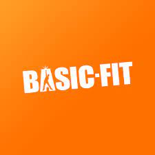
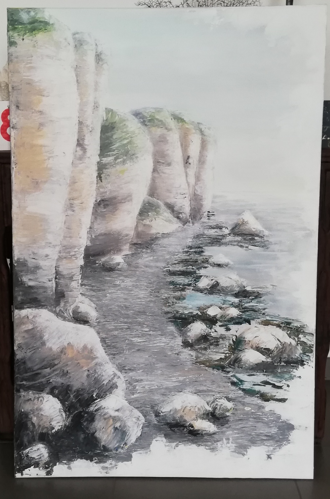

fitness
I go to the basic fit | in Marke, where most of my gym buddies go as well.

art
Through those 6 years of high school I realised I love making art as a hobby.
Recently I started making digital art and I love it.
- My most recent painting I made for my grandma's 80th birthday

enjoying nature
I just love going to places where there is no human presence.
My dream is to one day travel the world in a skoolie before settling somewhere.
But I love the nature in my surroundings as well.
There is so much to be seen in "het Preshoekbos" where I live.
Favorite band / music:
I just love their laid back music

Favorite song:
Film& & tv:
And that is Stranger Things.